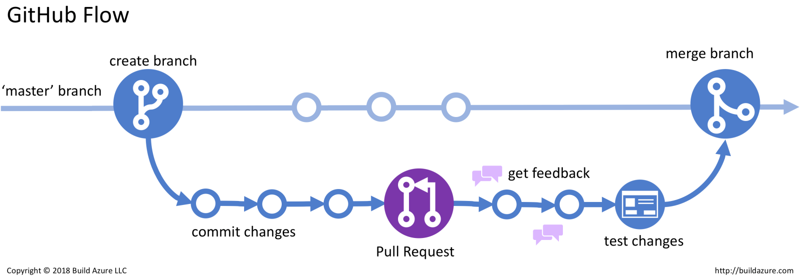

ITP2 - Informationstechnische Projekte
3. und 4. Klasse
Von Moritz SchibaniThemen:
Taschenrechner: JavaFX
3. KlasseSchere-Stein-Papier: GitHub
3. KlasseGitHub Version Control

GitHub Flow

Minesweeper: GitHub, JavaFX, Rekursion
3. KlasseRekursion
Iterativer Ansatz mittels while-Schleife:
int i = 0;
while(i < 10){
System.out.print(++i + " ");
}
Rekursion
Rekursive Ansatz mittels Methode:
public class Rekursiv {
public static int i = 0;
public static void rekursiveMethode() {
i++;
System.out.print(i + " ");
if (i < 10) {
rekursiveMethode(); // Rekursion!
}
}
public static void main(String[] args) {
rekursiveMethode();
}
}
AMCA-Racing - Rennspiel: PM klassich: Pflichtenheft, Projekthandbuch, PSP, usw..., GitHub
3. Klasse

Pflichtenheft
Lastenheft
PSP - Projektstrukturplan
Snake: SCRUM, JavaFX
4. Klasse